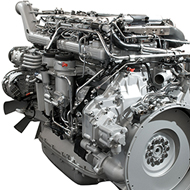

Sobre a loja
Dirceu foi uma das vítimas fatais de um deslizamento de terra, próximo à Ponte dos Arcos, em Veranópolis. As vítimas teriam sido identificadas na manhã da última sexta-feira (03). O óbito ocorreu junto a outras pessoas que também estavam no local.Dirceu foi uma das vítimas fatais de um deslizamento de terra, próximo à Ponte dos Arcos, em Veranópolis. As vítimas teriam sido identificadas na manhã da última sexta-feira (03). O óbito ocorreu junto a outras pessoas que também estavam no local.